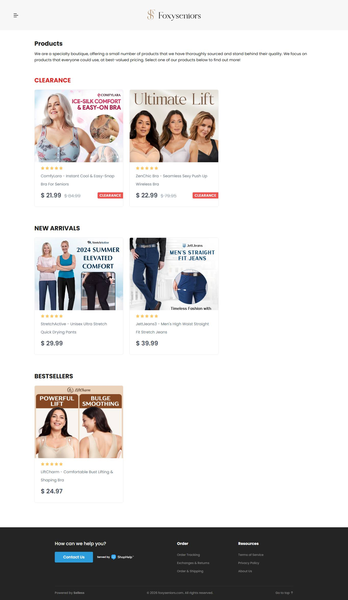
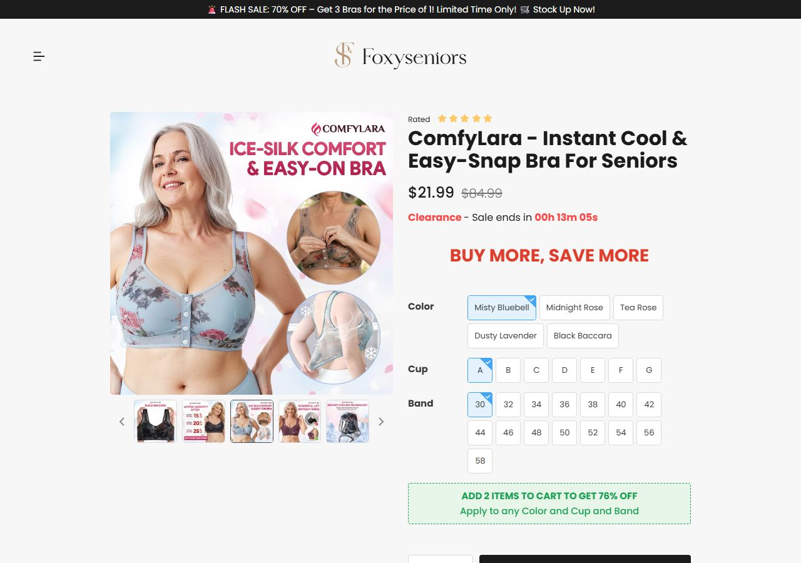
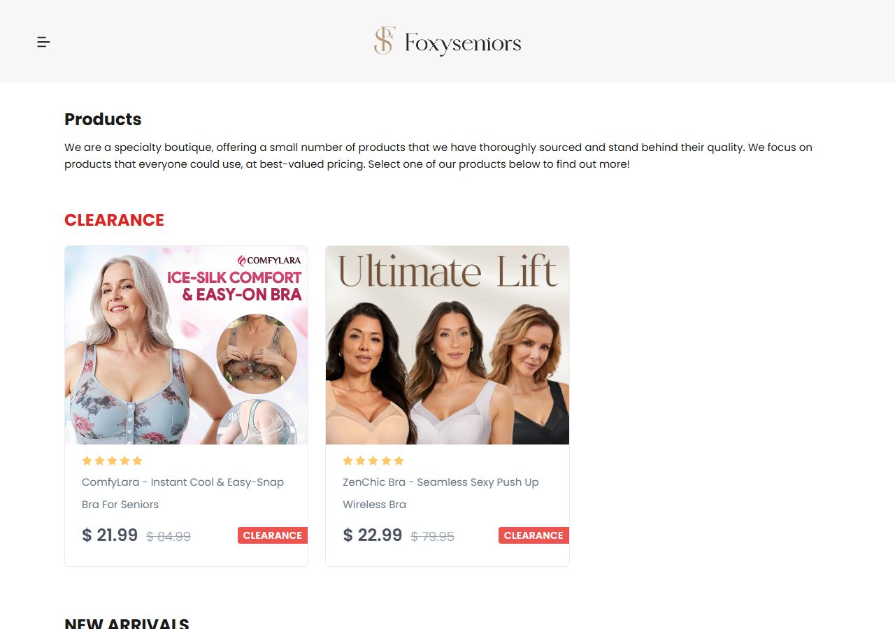

Foxy Seniors
Único do grupo com mecanismo de produto nomeado (tecido ice-silk que 'resfria 5 graus') e com oferta de multipack explícita no criativo (3 pelo preço de 1). É o modelo de escada de oferta a copiar.
01Produto campeão
ComfyLara - Instant Cool & Easy-Snap Bra For Seniors
$21.99 $84.99
handle /comfylara · preço lido no HTML da página de produto em 19/09/2026
Fraude de âncoraA âncora de $84,99 é idêntica nas quatro lojas, ao centavo. Nenhuma delas vende por esse valor. É preço de tabela fictício, vindo do mesmo template. Serve como leitura de que o nicho tolera inflação de âncora, não como prática a copiar.
02Mídia paga
30
anúncios ativos (extração auditável)
lidos um a um, com copy e data
observado
15
histórico na Biblioteca
estimativa da Meta, volátil (ver auditoria)
inferido
100%
sobrevivência
todos os anúncios extraídos estão no ar: operação nova
calculado
15d
longevidade do campeão
abaixo de 60 dias: não é escala sustentada
observado
| Mídia paga, campo a campo | Valor | Origem |
|---|---|---|
| Anúncios ativos | 30 | extração, lidos um a um observado |
| Histórico total | 30 pela extração · 15 pela estimativa da Biblioteca | duas fontes, divergência declarada inferido |
| Sobrevivência | 100% | ativos ÷ histórico da extração calculado |
| por dia | rajada: não obtidojanela da amostra menor que meio dia, extrapolar daria número irreal | marcado como rajada, só a duplicação é reportada observado |
| criativos únicos | 30 | títulos distintos na amostra observado |
| Duplicação | 53 cópias do campeão | variações simultâneas do mesmo criativo observado |
AuditoriaDivergência de contagem declarada. Aqui a Biblioteca devolveu MENOS que a extracao (15 contra 30 anuncios lidos). As 08h30 a mesma chamada devolveu 170. A extracao e o piso confiavel: 30 anuncios desta loja foram lidos um a um, com copy e data. Divergencia declarada.
Decisão registrada com o Mendes em 19/09/2026: a ficha mantém o número da extração, que é auditável anúncio a anúncio, e não o da Biblioteca, que variou muito na mesma manhã e devolveu "ativos" igual a "histórico" nas quatro lojas (o que é impossível). O auditor da skill segue reprovando este ponto de propósito.
Decisão registrada com o Mendes em 19/09/2026: a ficha mantém o número da extração, que é auditável anúncio a anúncio, e não o da Biblioteca, que variou muito na mesma manhã e devolveu "ativos" igual a "histórico" nas quatro lojas (o que é impossível). O auditor da skill segue reprovando este ponto de propósito.
03Ritmo de criativo
| Sinal | Medido | Leitura |
|---|---|---|
| Criativo campeão | The #1 Comfort Bra For Seniors abrir na Biblioteca de Anúncios ↗ | escolhido por longevidade (15 dias no ar), não por ser o primeiro da amostra |
| Variações do campeão | 53 | otimização agressiva: está buscando escala |
| Mix de formato | VIDEO: 25 · IMAGE: 5 | vídeo domina, com alguns estáticos |
| Sofisticação de produção | nível 1 a 2 | vídeo simples com modelo real, não produção de estúdio: custo baixo para competir |
| Ritmo por dia | não obtidojanela da amostra menor que meio dia | extrapolar daria número irreal (rajada), então só a duplicação é reportada |
LeituraRanking de criativos vencedores: o campeão desta loja é "The #1 Comfort Bra For Seniors", com 15 dias no ar e 53 variações. Pela régua, tempo baixo com muitas variações é lançamento agressivo: copie o método de teste, nunca a oferta.
04Tráfego e faturamento
20.000
visitas/mês
100% Estados Unidos
observado · SimilarWeb · 09/2026
não obtido
rejeição
SimilarWeb não devolveu para este domínio
observado
$4,398 a $8,796
Faturamento mensal estimado
estimado incerto: ticket medido x conversão de 1% a 2%
calculado
não obtido
mídia/mês
a Meta não publica gasto de anúncio comercial fora da União Europeia
observado
| Benchmark de vestuário (Estados Unidos) | Faixa |
|---|---|
| CPM (custo por mil impressões) | $8 a $15 |
| CPC (custo por clique) | $0,70 a $1,50 |
| CPA (custo por aquisição) | $20 a $40 |
LimiteBenchmark de categoria, não medido nesta conta: serve de régua para o plano, não como dado desta loja. Nenhum ROAS é derivado aqui de propósito: como o gasto não existe na fonte, qualquer ROAS calculado seria tautologia.
05Oferta e catálogo
- Frete
- "Secured Express Shipping", com regras por faixa de valor. Prazo exato não publicado na página.
- Prazo e BNPL
- Prazo de envio não declarado na página de produto. Nenhum parcelamento (Klarna, Afterpay, Shop Pay, Affirm ou Sezzle) foi detectado no HTML das quatro lojas.
- Garantia
- "Exclusive 45-Day Satisfaction Guarantee". Existe ainda um upsell de garantia estendida: "refund grátis em até 365 dias por qualquer motivo, sem precisar devolver".
- Reviews
- Nenhuma contagem de avaliação foi encontrada no HTML da página de produto. A prova social aparece como estrelas do próprio template, sem app de review identificável.
- Âncora
- $84,99 em todas as quatro lojas, ao centavo. Nenhuma pratica esse preço.
06Stack e prova social
- Plataforma
- Tech stack: plataforma fechada selless (assets em
cdn.selless.us), servida atrás de Cloudflare. Não é Shopify. As quatro lojas do nicho usam a mesma. - Pixel
- Pixel da Meta: a chamada
fbq(não aparece no HTML servido, mas a meta tagfacebook-domain-verificationestá presente. O pixel provavelmente carrega pelo gerenciador da própria plataforma ou após consentimento. Ausência no HTML não é prova de ausência de rastreamento. Pixel do TikTok: não detectado. - Redes sociais
- Os links de redes sociais das quatro lojas são idênticos e quebrados:
facebook.com/p10neinstagram.com/p10n, que é o placeholder do template. Nenhuma delas tem presença social orgânica real, o que sustenta o selo de arbitragem.
Achado de redeAs quatro lojas são a mesma infraestrutura. Mesma plataforma, mesma âncora, mesmo placeholder social, e o sufixo "-charm" em quatro domínios do nicho. Isso não é um mercado com quatro concorrentes independentes.
07Anatomia do vencedor
| Elemento | O que a loja faz |
|---|---|
| Big idea | O sutiã de conforto número 1 para idosas |
| Mecanismo | Tecido ice-silk que "resfria 5 graus" e fecho de botão frontal |
| Hook | Escassez: "LAST CHANCE" |
| Presell | Sem advertorial: vídeo para a página de produto |
| Objeção principal | Preço por peça: resolvido com multipack 3 por 1 |
08Capturas
Home

Página de produto

Carrinho

09Scorecard de nível de execução
| Eixo | Pontos | Por quê |
|---|---|---|
| Sourcing simples | 2 | produto genérico com mecanismo nomeado (ice-silk) |
| Ticket fecha sem escada complexa | 1 | $21,99 só fecha porque roda multipack 3 por 1 |
| Criativo simples de produzir | 2 | vídeo e alguns estáticos, produção baixa |
| Mecanismo com urgência | 2 | dor física somada a calor e desconforto |
| Investimento de entrada baixo | 2 | 30 anúncios na amostra |
| Sem dependência de autoridade | 2 | vende no benefício e no preço por peça |
| Soma | 11 de 12 | NÍVEL INICIANTE |
Como lerA soma de 10 a 12 é nível iniciante, de 6 a 9 é médio, de 0 a 5 é avançado. O nível é etiqueta de perfil de operador, não nota de corte: oportunidade de nível médio continua valendo, só pede mais experiência.
10Selos e veredito
Modelo
DROPSHIP PURO
Veredito
MODELAR
Nível
NÍVEL INICIANTE
Defensabilidade
ARBITRAGEM
Leitura para a BondesseO que copiar: A escada 3x1 declarada já no anúncio, e o mecanismo nomeado (ice-silk). Mecanismo com nome vende melhor que adjetivo.
O que evitar: O gatilho 'LAST CHANCE' num lançamento de 15 dias.
O que evitar: O gatilho 'LAST CHANCE' num lançamento de 15 dias.
11Dados não obtidos
| Dado | Método tentado | Motivo |
|---|---|---|
| Gasto em mídia | Biblioteca de Anúncios, campos spend e impressions | a Meta só publica para anúncio político e União Europeia |
| Split pago x orgânico | SimilarWeb público | não devolveu o detalhamento de canais nesta rodada |
| Contagem de reviews | inspeção do HTML da página de produto | sem app de review identificável; estrelas embutidas no template |
| Custo de fornecedor | não executado nesta rodada | fora do escopo desta coleta |
| rejeição, páginas por visita e duração não retornaram no SimilarWeb público | SimilarWeb público | a fonte não devolveu o campo para este domínio |